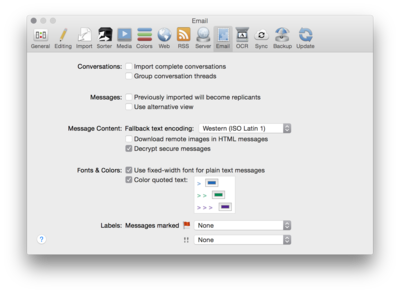

|

Use these options to define how emails are imported and displayed inside DEVONthink Pro Office.
Conversations
-
Import complete conversations: DEVONthink Pro Office can import not only selected email messages, but also other messages related to a conversation. Check this box to let DEVONthink Pro Office scan your Sent Messages folder and import sent messages that belong to the same conversation.
-
Group conversation threads: Check this option to combine all messages belonging to a conversation thread into a group. This makes identifying conversations easier and automatically adds structure to the imported messages.
|
Note: These features only work if the email program maintains references to previous messages sent.
|
Messages
-
Previously imported will become replicants: Check this option to import previously imported messages again as replicants. When this option is unchecked, DEVONthink Pro Office skips previously imported messages.
-
Use alternative view: Check this option to view email messages as text alternative by default.
Message Content
-
Fallback text encoding: When decoding an email message, DEVONthink Pro Office uses the message's encoding information. When there is no encoding information, DEVONthink Pro Office uses the encoding that you set in this pop-up menu.
-
Download remote images in HTML messages: Check to store the image references required by HTML messages in the database. Spammers and other unfriendly agencies may use these images to track if you have read the message. Therefore this is unchecked by default.
-
Encryption: DEVONthink Pro Office can decrypt and file secure email messages so that you can search them or apply AI-based functions such as Classify or See Also to them.
|
Note: The email message will be stored decrypted in the database package. Its contents are available from within DEVONthink Pro Office and to other applications or Spotlight.
|
Font, Quoted Text, Labels
-
Use fixed-width font for plain text messages: Check to show plain text messages using a fixed-width font such as Courier. This is useful if the messages contain tables or footers formatted with spaces.
-
Color quoted text: Check to mark text quoted from previous recipients in messages. Click the color buttons to change the color for first, second, and third level quotes.
-
Labels: Finally, select which labels you want to assign to messages that were flagged or marked as "high priority." Since items can only have one label at a time, flagged messages are treated as more important than messages marked as "high priority."
|
Note: The first two options above only modify the display of email messages in the text view. By default, messages are displayed using QuickLook.
|
|